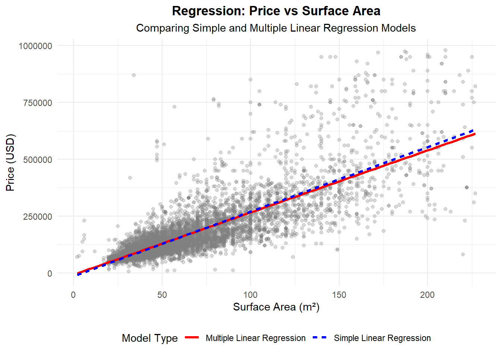
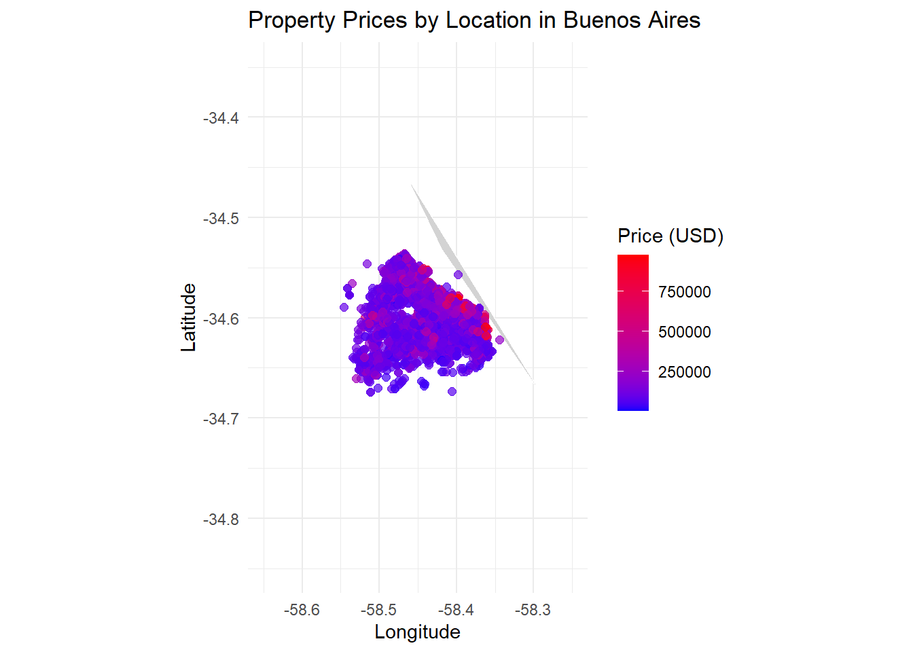
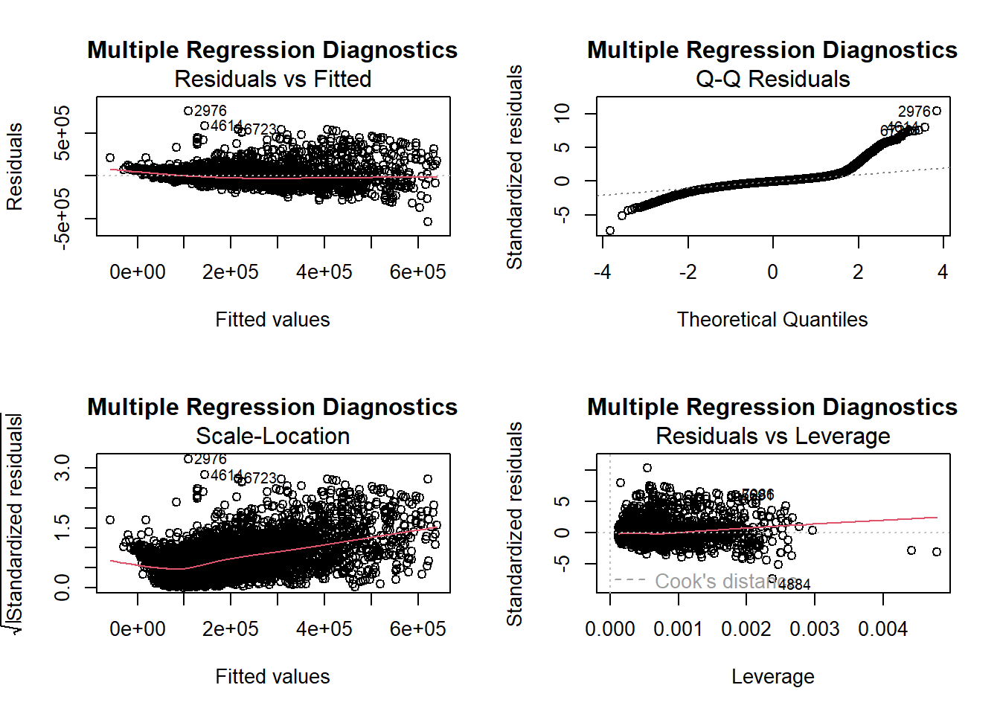

In this study of Buenos Aires real estate, our objective is to understand how the price of an apartment (expressed in approximate USD) is influenced by its surface area and location. We pre-filtered data so that the surface area is between 1 and 500 m², ensuring that the analysis targets typical residential units rather than extreme outliers. Additionally, location variables (latitude and longitude) are included to adjust for spatial influences, though the primary focus remains on the relationship between price and size.
Code
# Read CSV files from the local computerdf1 <-read.csv("buenos-aires-real-estate-1 - Sheet1.csv", stringsAsFactors =FALSE)df2 <-read.csv("buenos-aires-real-estate-2 - Sheet1.csv", stringsAsFactors =FALSE)df3 <-read.csv("buenos-aires-real-estate-3 - Sheet1.csv", stringsAsFactors =FALSE)df4 <-read.csv("buenos-aires-real-estate-4 - Sheet1.csv", stringsAsFactors =FALSE)df5 <-read.csv("buenos-aires-real-estate-5 - Sheet1.csv", stringsAsFactors =FALSE)# Combine all dataframesall_data <-rbind(df1, df2, df3, df4, df5)# Filter for apartments in Buenos Aires (Capital Federal)data_apartments <- all_data %>%filter(property_type =='apartment'&grepl('Capital Federal', place_with_parent_names))# Process the lat.lon column by splitting into 'lat' and 'lon'data_apartments <- data_apartments %>%separate(lat.lon, into =c('lat', 'lon'), sep =',', convert =TRUE, extra ='drop', fill ='right')# Remove rows with missing key variables data_apartments <- data_apartments %>%filter(!is.na(price_aprox_usd),!is.na(surface_covered_in_m2),!is.na(lat),!is.na(lon))# Filter for surface area between 1 and 500 square meters data_filtered <- data_apartments %>%filter(surface_covered_in_m2 >=1& surface_covered_in_m2 <=500)# Remove outliers:# We'll remove observations where price and surface area are outside of mu +- 3 sigmaremove_outliers <-function(x) { m <-mean(x, na.rm =TRUE) s <-sd(x, na.rm =TRUE) lower_bound <- m -3*s upper_bound <- m +3*s x >= lower_bound & x <= upper_bound}data_clean <- data_filtered %>%filter(remove_outliers(price_aprox_usd),remove_outliers(surface_covered_in_m2),remove_outliers(lat),remove_outliers(lon))# Check number of rows at each step# print(paste("Original data rows:", nrow(data_apartments)))# print(paste("Data rows after surface area filter (1-500 m²):", # nrow(data_filtered)))# print(paste("Data rows after outlier removal:", nrow(data_clean)))# Display summary statistics using panderpander(summary(data_clean[, c('price_aprox_usd', 'surface_covered_in_m2', 'lat', 'lon')]), caption ="Summary Statistics of Clean Data")
Summary Statistics of Clean Data
price_aprox_usd
surface_covered_in_m2
lat
lon
Min. : 5196
Min. : 2.00
Min. :-34.67
Min. :-58.55
1st Qu.: 90000
1st Qu.: 38.00
1st Qu.:-34.62
1st Qu.:-58.46
Median :125000
Median : 51.00
Median :-34.60
Median :-58.43
Mean :168027
Mean : 64.11
Mean :-34.60
Mean :-58.43
3rd Qu.:190000
3rd Qu.: 78.00
3rd Qu.:-34.58
3rd Qu.:-58.40
Max. :980000
Max. :227.00
Max. :-34.54
Max. :-58.34
2) Model and the Different \(H_0/H_a\)
We consider a multiple regression model of the form:
\[
price\_aprox\_usd = \beta_0 + \beta_1 \times surface\_covered\_in\_m2 + \beta_2 \times lat + \beta_3 \times lon + \epsilon
\]\(\beta_0\) (Intercept): This is the estimated price when all predictors are zero. While a zero value for surface area and location is outside our range of interest, \(\beta_0\) serves as a baseline.
\(\beta_1\) (Slope for surface area): This coefficient describes the change in property price for each additional square meter of surface area.
\(H_0\): \(\beta_1 = 0\) (i.e., surface area has no effect on price)
\(H_a\): \(\beta_1 \neq 0\) (i.e., surface area does affect price)
\(\beta_2\) (Slope for latitude) and \(\beta_3\) (Slope for longitude): These coefficients capture how the property’s geographic location influences its price. Although these are adjusted variables in our model, they are not the primary focus of the hypothesis test, which is mainly concerned with the impact of surface area.
\(H_0\): \(\beta_2 = 0\) and \(\beta_3 = 0\) (location does not affect price)
\(H_a\): \(\beta_2 \neq 0\) and \(\beta_3 \neq 0\) (location does affect price)
Code
# Fit the multiple linear regression model WITH location variables model <-lm(price_aprox_usd ~ surface_covered_in_m2 + lat + lon, data = data_clean) # Fit a simple linear regression model with just surface area model_simple <-lm(price_aprox_usd ~ surface_covered_in_m2, data = data_clean) # Print the summary of the regression models using pander pander(summary(model), caption ="Multiple Linear Regression Model Summary")
Estimate
Std. Error
t value
Pr(>|t|)
(Intercept)
52685028
1962774
26.84
4.929e-152
surface_covered_in_m2
2733
22.57
121.1
0
lat
933716
33365
27.98
1.746e-164
lon
348898
22304
15.64
2.375e-54
Multiple Linear Regression Model Summary
Observations
Residual Std. Error
\(R^2\)
Adjusted \(R^2\)
7995
73340
0.6821
0.682
Code
pander(summary(model_simple), caption ="Simple Linear Regression Model Summary")
Estimate
Std. Error
t value
Pr(>|t|)
(Intercept)
-13948
1730
-8.062
8.57e-16
surface_covered_in_m2
2838
23.39
121.3
0
Simple Linear Regression Model Summary
Observations
Residual Std. Error
\(R^2\)
Adjusted \(R^2\)
7995
77144
0.6482
0.6481
Code
# ANOVA Table for the fitted model anova_table <-anova(model) pander(anova_table, caption ="ANOVA Table for the Regression Model")
mean_lat <-mean(data_clean$lat) mean_lon <-mean(data_clean$lon) # Create a sequence of surface area values for prediction surface_seq <-seq(min(data_clean$surface_covered_in_m2), max(data_clean$surface_covered_in_m2), length.out =100) # Predict using the simple model pred_simple <-predict(model_simple, newdata =data.frame(surface_covered_in_m2 = surface_seq)) # Predict using the multiple model (fixing lat and lon at their means) pred_multiple <-predict(model, newdata =data.frame(surface_covered_in_m2 = surface_seq, lat = mean_lat, lon = mean_lon)) # Create a data frame for plotting plot_data <-data.frame( surface_covered_in_m2 =rep(surface_seq, 2), price_aprox_usd =c(pred_simple, pred_multiple), Model =rep(c("Simple Linear Regression", "Multiple Linear Regression"), each =100) ) # Create the plot ggplot() +geom_point(data = data_clean, aes(x = surface_covered_in_m2, y = price_aprox_usd), alpha =0.3, color ="gray50") +geom_line(data = plot_data, aes(x = surface_covered_in_m2, y = price_aprox_usd, color = Model, linetype = Model), size =1.2) +scale_color_manual(values =c("Simple Linear Regression"="blue", "Multiple Linear Regression"="red")) +labs(title ="Regression: Price vs Surface Area", subtitle ="Comparing Simple and Multiple Linear Regression Models", x ="Surface Area (m²)", y ="Price (USD)", color ="Model Type", linetype ="Model Type") +theme_minimal() +theme(legend.position ="bottom", plot.title =element_text(hjust =0.5, face ="bold"), plot.subtitle =element_text(hjust =0.5))

Code
# Real Map Visualization: # Get Argentina map data argentina_map <-map_data("world", region ="Argentina") # Overlay property data within approximate bounds for Buenos Aires ggplot() +geom_polygon(data = argentina_map, aes(x = long, y = lat, group = group), fill ="lightgrey", color ="white") +geom_point(data = data_clean, aes(x = lon, y = lat, color = price_aprox_usd), alpha =0.7, size =2) +scale_color_gradient(low ="blue", high ="red", name ="Price (USD)") +coord_fixed(1.3) +xlim(-58.65, -58.25) +# Approximate limits for Buenos Aires ylim(-34.85, -34.35) +# Approximate limits for Buenos Aires labs(title ="Property Prices by Location in Buenos Aires", x ="Longitude", y ="Latitude") +theme_minimal()

4) Model
The multiple regression model includes surface area, latitude, and longitude as predictors of property price:
Code
# Diagnostic Plots for the multiple regression model par(mfrow =c(2, 2)) plot(model, main ="Multiple Regression Diagnostics")

5) Values of the Slope and Y-Intercept for Both Lines
Code
# Extract coefficients from the simple linear regression model simple_coef <-coef(model_simple) simple_intercept <- simple_coef[1] simple_slope <- simple_coef[2] # Extract coefficients from the multiple linear regression model multiple_coef <-coef(model) multiple_intercept <- multiple_coef[1] multiple_slope_surface <- multiple_coef[2] multiple_slope_lat <- multiple_coef[3] multiple_slope_lon <- multiple_coef[4] # Create a table of coefficients coef_table <-data.frame( Model =c("Simple Linear Regression", "Multiple Linear Regression"), Intercept =c(simple_intercept, multiple_intercept), Slope_Surface =c(simple_slope, multiple_slope_surface), Slope_Lat =c(NA, multiple_slope_lat), Slope_Lon =c(NA, multiple_slope_lon) ) coef_table_tidy <- coef_table %>%pivot_longer(cols =-Model, names_to ="Coefficient", values_to ="Value") %>%pivot_wider(names_from = Model, values_from = Value)# Display the table using pander pander(coef_table_tidy, caption ="Comparison of Model Coefficients")
Comparison of Model Coefficients
Coefficient
Simple Linear Regression
Multiple Linear Regression
Intercept
-13948
52685028
Slope_Surface
2838
2733
Slope_Lat
NA
933716
Slope_Lon
NA
348898
6) Conclusions with Future Studies
Interpretation:
Holding location constant, for each additional square meter of surface area, the property price increases by approximately $ 2733.42 USD.
For each degree increase in latitude (moving northward), the property price changes by approximately $ 933716.5 USD.
For each degree increase in longitude (moving eastward), the property price changes by approximately $ 348898.2 USD.
Conclusions: The analysis confirms that surface area has a strong positive impact on property price in Buenos Aires. Even after adjusting for spatial location (latitude and longitude), each additional square meter is associated with a statistically significant increase in price. The simple linear regression line provides clear interpretability for decision-makers in evaluating property value based on size. The multiple regression model explains approximately r round(summary(model)$r.squared * 100, 1)% of the variance in property prices, indicating that surface area and location are important but not the only factors influencing price.
Future Studies:
Incorporate Additional Variables: Future research could incorporate more detailed neighborhood characteristics (e.g., proximity to schools, parks, or transportation hubs) that can further explain price variation.
Nonlinear Relationships: There may be a nonlinear relationship between property size and price; models such as polynomial regression or splines could capture curvature in the trend.